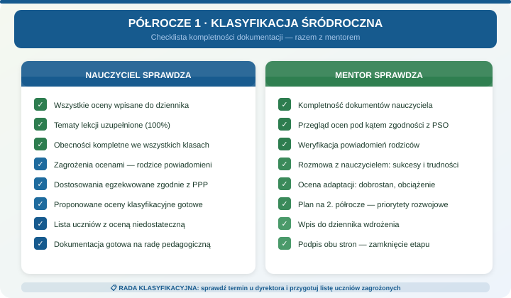

Zadania mentora
- Sprawdzić terminy ocen, arkuszy i rady klasyfikacyjnej.
- Zweryfikować kompletność tematów, obecności i ocen.
- Omówić informowanie rodziców o zagrożeniach.
- Przygotować rozmowę podsumowującą półrocze.
Etap P1
Cel: przygotować klasyfikację półroczną, zamknąć dokumentację i ustalić cele na drugie półrocze.

Wpisz: trzy sprawy zamknięte, dwie sprawy do poprawy, jedną procedurę do powtórzenia i cele na drugie półrocze.
Rozmowa 5 nie służy rozliczeniu osoby. Ma nazwać sukcesy, trudności, procedury wymagające powtórzenia i cele na drugie półrocze.
Plan rozwoju obejmuje ocenę obszarów 1-5, trzy cele, miernik postępu, termin i typ wsparcia: obserwacja, konsultacja, materiał, rozmowa z wychowawcą albo decyzja dyrekcji.